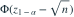
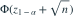
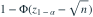
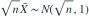

。检验 对  ，采用水平
，采用水平  的最强检验。用 表示标准正态下侧分位点，该检验在备择下的功效为？
的最强检验。用 表示标准正态下侧分位点，该检验在备择下的功效为？
，采用水平 的最强检验。用 表示标准正态下侧分位点，该检验在备择下的功效为？- A

- B
- C

- D

我已思考，展开答案与解析
正确答案：D
- 似然比随样本和增大，拒绝条件为 。
- 备择下

，故拒绝概率为 。
易错提醒功效是在备择分布下计算拒绝概率，不是 α 本身。
JYSG · 432精选 · 册内清华大学432·2026年·三(2)；PDF第118页（印刷页116）
原大题拆解